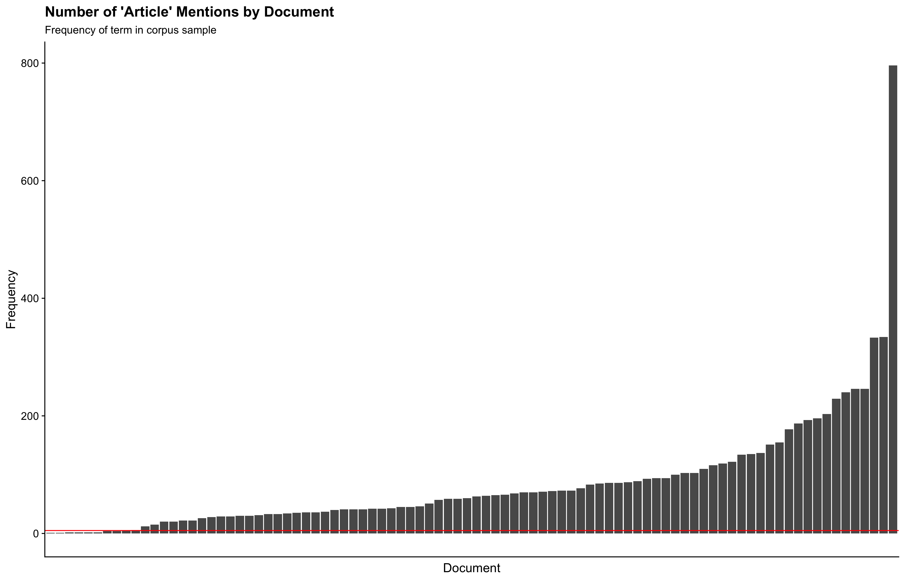

Further processing and data exploration
Files for everything done below can be found on GitHub
needed to recreate larger frame, code below does this, not significantly different than earlier posts, included for context if interested
# Import info on files to be used
corpus_docs <- read_csv(
"/Users/dananestor/DACSS/Blog/Untitled/docs/_posts/2022-03-27-text-as-data-post-4/corpus_docs.csv",
show_col_types = FALSE)
corpus_files <- corpus_docs$File
corpus_file_names <- as.character(corpus_docs$Name)
clean_contracts_table <- read_csv(
"/Users/dananestor/DACSS/Blog/Untitled/docs/_posts/2022-03-06-text-as-data-post-3/clean_contracts_table.csv",
show_col_types = FALSE)
# Create new contract frame
big_contract_frame <- tibble("a","b","c") #create empty data frame
colnames(big_contract_frame) <- c("contract", "text", "pages")
# Loop for adding contract number, document text, and page numbers
for (i in seq_along(corpus_files)){
# print(i)
big_contract_frame[i,1] <- corpus_file_names[i]
big_contract_frame[i,2] <-
paste(
suppressMessages(pdf_text(
corpus_files[i])),
sep = '', collapse = '')
big_contract_frame[i,3] <- as.character(
pdf_info(corpus_files[i])$pages)
}
# Join w contracts table for metadata
big_contract_frame$contract <- as.integer(big_contract_frame$contract) #convert to integer for join
big_contract_frame$pages <- as.integer(big_contract_frame$pages)
big_contract_frame <- #pull in meta-data using join
left_join(big_contract_frame,
clean_contracts_table,
by = c("contract" = "CBA.File")) %>%
select(
c(contract, Employer.Name, Union, Location, Expiration.Date, NAICS., X.Wrkrs, pages, text))
# Clean up regions
big_contract_frame$Loc_unique <- big_contract_frame$Location %>% #clean up location names
str_replace_all("OHIO", "OH") %>%
str_replace_all("FORT HILL, OK", "OK") %>%
str_replace_all("PASCAGONOULA, MISSISSIPPI", "MS") %>%
str_replace_all("PASCAGOULA", "MS") %>%
str_replace_all("U.S.", "NATIONAL") %>%
str_replace_all("(..).+", '\\1') %>%
str_replace_all("NA", "NATIONAL")
regions <- as_tibble( #pull in census data on regions
read_csv('/Users/dananestor/DACSS/Useful Data/us census bureau regions and divisions.csv',
show_col_types = FALSE)) %>%
rbind(rep("NATIONAL", 4))
big_contract_frame$Region <- regions$Region[match( #add region column using census data
big_contract_frame$Loc_unique,
regions$`State Code`)] %>%
str_replace_all("NATIONAL", "National")
# Clean up industry
NAICS_short <- as_tibble( #pull in census data on industry
read_csv("/Users/dananestor/DACSS/Useful Data/NAICS_2_digits.csv",
show_col_types = FALSE))
NAICS <- as_tibble(
read_csv("/Users/dananestor/DACSS/Useful Data/NAICS_complete.csv",
show_col_types = FALSE))
big_contract_frame$Industry <- NAICS$industry_title[match( #add specific industry info
big_contract_frame$NAICS.,
NAICS$industry_code)] %>%
str_replace_all("NAICS\\s\\d+\\s(.+)", "\\1") %>%
str_replace_all("NAICS\\d+\\s\\d+\\s(.+)", "\\1")
big_contract_frame <- big_contract_frame %>% #add general industry info
mutate("Short_Industry" =
substr(NAICS., 1, 2))
big_contract_frame$Short_Industry <- NAICS_short$Definition[match(
big_contract_frame$Short_Industry,
NAICS_short$Sector)]
# Reorder columns
big_contract_frame <- big_contract_frame %>%
select(
c(contract, Employer.Name, Union, Location, Loc_unique, Region, Expiration.Date,
NAICS., Industry, Short_Industry, X.Wrkrs, pages, text)
)
# Save
write_csv(big_contract_frame,
"/Users/dananestor/DACSS/Blog/Untitled/docs/_posts/2022-03-27-text-as-data-post-4/big_contract_frame.csv")
big_contract_frame %>%
ungroup() %>%
slice_head(n = 5) %>%
mutate(text = str_trunc(text,
width = 50)) %>%
kable(caption = 'Larger Corpus Data Frame') %>%
kable_styling(bootstrap_options = c("striped",
"hover",
"responsive")) %>%
scroll_box(width = "100%")
| contract | Employer.Name | Union | Location | Loc_unique | Region | Expiration.Date | NAICS. | Industry | Short_Industry | X.Wrkrs | pages | text |
|---|---|---|---|---|---|---|---|---|---|---|---|---|
| 1 | WEYERHAEUSER PAPER COMPANY | PULP AND PAPER WORKERS UBCJA (WPPW) LOCAL UNION 211/PULP AND PAPER WORKERS UBCJA (WPPW) LOCAL UNION 580/PULP AND PAPER WORKERS UBCJA (WPPW) LOCAL UNION 633/PULP AND PAPER WORKERS UBCJA (WPPW) LOCAL UNION 677 | NATIONAL | NATIONAL | National | 2001-03-04 | 321912 | Cut stock, resawing lumber, and planing | Manufacturing | 1300 | 204 | Cornell University … |
| 1015 | SMACNA-WESTERN WASHINGTON, INC. | SMW 66 | WA WESTERN | WA | West | 2012-05-31 | 23822 | Plumbing and HVAC contractors | Construction | 3000 | 71 | AGREEMENT By and Between Sheet Metal Work… |
| 1016 | SMACNA- WESTERN WASHINGTON, INC. | SMW 66 | WA | WA | West | 2009-05-31 | 23822 | Plumbing and HVAC contractors | Construction | 3000 | 26 | STANDARD F… |
| 1044 | CONSTRUCTION CONTRACTORS ASSOCIATION OF HUDSON VALLEY (NON-RES) | UBC RC, UPSTATE NY | NY NEWBURGH | NY | Northeast | 2006-05-31 | 23622 | Commercial building construction | Construction | 3000 | 45 | K … |
| 1050 | URS FEDERAL SERVICES (AN AECOM COMPANY) | AIR ENGINEERING METAL TRADES COUNCIL | TN | TN | South | 2020-06-30 | NA | NA | NA | 54 | 40 |
FA9101-18-R-1000 |
Index big frame, comparable to corpus text names
Create corpus, use KWIC to explore
# Create corpus
big_contract_corpus <- corpus(big_contract_frame$text)
big_contract_corpus_summary <- summary(big_contract_corpus,
n = Inf)
# Create KWIC for "Table of Contents"
kwic_toc <- kwic(big_contract_corpus,
phrase("Table of Contents"),
window = 50,
case_insensitive = TRUE)
# Capture contracts with detectable tables of contents
con_toc <- unique(kwic_toc$docname)
# Visualize
kwic_toc_table <- tibble("Contract" = kwic_toc$docname,
"Keyword" = kwic_toc$keyword,
"Context" = kwic_toc$post)
kwic_toc_table %>%
group_by(Contract) %>% #get first two matches for each contract
slice_head(n = 2) %>%
ungroup() %>% #get first 5 documents
slice_head(n = 10) %>%
kable() %>%
kable_styling(bootstrap_options = c("striped",
"hover",
"responsive"))
| Contract | Keyword | Context |
|---|---|---|
| text1 | TABLE OF CONTENTS | Fa * * Summary Plan Description 158 Who Is Eligible . . . . . . . . 160 When Coverage Begins ; . . , . I62 How Benefits are Paid , 162 . Whatihe Deductible Is 163 What Charges Are Covered 163 What ” Usual and Customary or |
| text1 | TABLE OF CONTENTS | Page Summary of Benefits . - 184 How to Use Your Program 184 Estimate of Benefits 185 Explanation of Incentive Periods , . ’ 185 Payment Levels for Class I and Class II Benefits 185 Payment Levels for Class III Benefits 185 Program Maximum 185 Employee Eligibility ami Termination ’ |
| text10 | TABLE OF CONTENTS | Page Definitions 1 Purposes of this Agreement 3 Article 1 - Territory 4 Article 2 - Work Affected 4 Article 3 - Effective Date-Duration-Modification 6 ” No strike , no lockout ” provisions 6 Termination 7 Article 4 - Subcontractors Clause - Building 7 Non-signatory Subcontractors 7 Venders 8 Low |
| text10 | Table of Contents | ( Continued ) Article 5 - Union Recognition and Hiring ( continued ) Non-payment of Dues 19 Workers Qualifications 19 Separation Slips 19 Article 6 - Working Conditions 20 Hours of Work-Overtime 20 Single Shift - Heavy Highway 20 Single Shift - Building 20 Work Week 21 Federally Funded Work |
| text100 | TABLE OF CONTENTS | MASTER AGREEMENT ARTICLE PAGE I Recognition 1 II Health and Welfare Benefits 1 III Retirement And Pension Benefits 6 IV Separation Benefit Allowance Plan 16 V Employee Stock Purchases Savings Plan . . . 18 VI Holidays 19 VII Vacations 22 VIII Leaves of Absence 28 IX Inter-Plant Transfer of |
| text101 | TABLE OF CONTENTS | PAGE Aftnofi RECOGNITION 1 Afmcifz EMPLOYEE INVOLVEMENT 2 ARnci £ 3 GROUP UFE INSURANCE 2 3.1 . Eligibility , 3 3.2 . Benefits 3 3.3 . Contributions 3 3.4 . Retirement Coverage 3 3.4-1 . Normal Retirement 3 3.4-2 . Early Retirement 4 3.4-3 . Retirement After Normal Retirement Date |
| text101 | TABLE OF CONTENTS | , CONT . PAGE ARTICLE n 11.2-4 . Death In Family 40 11.2-5 . In The Event Of Layoff 41 ARTICLE 12 GRIEVANCE PROCEDURE 41 12.1-1 . First Step 41 12.1-2 . Second Step 41 12.1-3 . Third Step 42 12.1-4 . Fourth Step 42 ARTICLED UNION SECURITY 45 ARTICLE |
| text109 | TABLE OF CONTENTS | Page Assent Language I Basic Principles . I ARTICLE I SECTION 1.01 Effective Date 2 SECTION 1.02 Changes 2-3 SECTION 1.03 International IBEW / NECA Approval 3 SECTION 1.04 Work Stoppage 3 SECTION 1.05 Labor / Management Committee Matters 3 SECTION 1.06 Grievances 3 SECTION 1.07 Committee Matters 4 SECTION |
| text11 | TABLE OF CONTENTS | Article and Section Page 1 PREAMBLE vii 2 PART A GENERAL AGREEMENT 1 3 ARTICLE I GENERAL CONDITIONS OF THE CONTRACT 1 4 Section 1 . - Application , Amendment , Modification and Termination of the Agreement 1 5 A . Recognition for Bargaining Unit 1 6 B . Definitions |
| text11 | TABLE OF CONTENTS | Article and Section Page 1 Section 7 . - Information to be Furnished to the Union 17 2 A . Information to be Furnished Upon Request 17 3 B . Information to be Furnished on a Regular Basis 17 4 C . Reports on Computer Media 18 5 ARTICLE HI |
Looks like “article” is the top-level unit on most contracts
What does it look like around article?
kwic_art <- kwic(corpus_sample(big_contract_corpus, size = 100),
"article",
window = 30,
case_insensitive = TRUE)
# Count
con_art <- unique(kwic_art$docname)
# Visualize
kwic_art_table <- tibble("Contract" = kwic_art$docname,
"Keyword" = kwic_art$keyword,
"Pre" = kwic_art$pre,
"Post" = kwic_art$post)
kwic_art_table %>%
group_by(Contract) %>% #get first two matches for each contract
slice_head(n = 2) %>%
ungroup() %>% #get first 5 documents
slice_head(n = 10) %>%
kable() %>%
kable_styling(bootstrap_options = c("striped",
"hover",
"responsive"))
| Contract | Keyword | Pre | Post |
|---|---|---|---|
| text1 | ARTICLE | , 1995 will receive such benefits , if any , as are provided in the Plan documents in effect on the date of their retirement , termination , or transfer | I . ELIGIBILITY AND SERVICE 1.1 The term ” Participant ” shall mean a person who was hired by Weyerhaeuser Company or an affiliated company ( ” Company ” ) |
| text1 | ARTICLE | shall include salaried service , if any . Hours for nonperformance of duty shall be credited in accordance with DOL Regulation 2530.200b-2 ( b ) and ( c ) . | IA , SERVICE WITH OTHER COMPANIES 1A . 1 For all purposes of this Plan , service with a company designated , and for the period described in Schedule B |
| text105 | Article | adjusting any difference by rational common sense methods . Now , therefore , in consideration of the mutual promise and agreements herein contained the parties hereto agree as follows : | I Effective Date - Changes - Grievances - Disputes Section 1.01 - Effective Date This agreement shall take effect September 1st , 2010 and shall remain in effect until August |
| text105 | article | be specified in the notice , or not later than the first negotiating meeting unless mutually agreed otherwise . C ) The existing provisions of the agreement , including this | , shall remain in full force and effect until a conclusion is reached in the matter of proposed changes . 1 D ) Unresolved issues or disputes arising out of |
| text108 | ARTICLE | . 3 . It is further agreed and understood that the liability of the Contractor subscribing hereto and the Local Union sub-scribing hereto shall be several and not joint . | I PURPOSE 4 . The purpose of this Agreement is to determine the hours , wages and other conditions of employment and to adopt measures for the settlement of differences |
| text108 | ARTICLE | that the Contractors may secure sufficient capable employees and the employees may have as much continuous employment as possible without interruption by lockouts , strikes or other labor troubles . | II SCOPE OFAGREEMENT 5 . Highway / Heavy construction shall include construction , modification , additions or repairs of roads and streets and construction incidental thereto ; alleys , guardrails |
| text110 | ARTICLE | Tires North America , Ltd . Buffalo , New York 9 l United Steelworkers of America I and Local #35I Expires 2006 b TABLE O F CONTENTS ) Page ) | I - RECOGSITION SECTION 1.01 -BARGAINING UNIT SECTION 1.02 -UNION SECURITY ) ARTICLE I1 -UNION SECTION 2.01 -UNION FUNCTIONS ) SECTION 2.01 -UNION RESPONSIBILITY ) ARTICLE I l l - |
| text110 | ARTICLE | Steelworkers of America I and Local #35I Expires 2006 b TABLE O F CONTENTS ) Page ) ARTICLE I - RECOGSITION SECTION 1.01 -BARGAINING UNIT SECTION 1.02 -UNION SECURITY ) | I1 -UNION SECTION 2.01 -UNION FUNCTIONS ) SECTION 2.01 -UNION RESPONSIBILITY ) ARTICLE I l l - LIANACEMES1 - , - ARTIC1 . E IV BARGAINING PROCEDURE SECTION 4.01 -CllANGE |
| text112 | ARTICLE | . . . . . . . . . . . . . . . . . . . . . . . . . . . . . I | I . . . . . . . . . . . . . . . . . . . . . . . . . . . . . |
| text112 | ARTICLE | . . . . . . . . . . . . . . . . . . . . . . . . . . . . . 1 | II . . . . . . . . . . . . . . . . . . . . . . . . . . . . . |
Use sample of 100 because full corpus is too large. Seems like a good place to start.
Out of 100 contracts sampled (so about 14% of the corpus), 88 have the word “article” in some form, with 7793 measured instances.
Good for increasing dimensionality in face of smaller-than-expected data set, allows for subtleties within each article to come through without being overwhelmed by words that appear in many articles, but infrequently in each.
Look at distro of “article” frequency across texts.
# Count number of mentions of 'article' by document
art_distro <- kwic_art %>%
group_by(docname) %>%
count() %>%
arrange(n)
# Plot distribution
art_distro_plot_2 <- art_distro %>%
ggplot(
aes(x = reorder(docname, n), #order from least to most mentions
y = n)) +
geom_col() +
geom_hline(yintercept = 5, #mark baseline acceptable level
color = "red") +
xlab("Document") +
theme_half_open() +
theme(axis.text.x = element_blank(),
axis.ticks.x = element_blank()) +
ylab("Frequency") +
ggtitle("Number of 'Article' Mentions by Document",
"Frequency of term in corpus sample")
# Save
ggsave("art_distro_plot_2.png",
art_distro_plot_2,
width = 14,
height = 9)
 Promising distro. Red line set at 5 instances of “article,” which seemed like a reasonable threshold - below, and contracts almost surely have some structural issue that should be explored.
Found a very significant code error. Had to go back and fix most of the post. What you just read is correct now, but previously it looked very different. When examining the distro of “article” mentions across documents, found that many contracts only have one mention, which was inconsistent with the term being a top-level index.
To investigate further, created code below to inspect words around the term in docs with infrequent usage, with a hunch that this could be a different meaning of “article.”
# NOT RUN
# sum(art_distro$n_Docs[1:4]) #174 docs w/4 or fewer mentions of article
# kwic_art_small <- tibble("Contract" = kwic_art$docname, #create new tibble
# "Keyword" = kwic_art$keyword,
# "Pre" = kwic_art$pre,
# "Post" = kwic_art$post) %>%
# add_count(kwic_art$docname) %>% #count number of observations per text
# filter(n <= 4) %>% #filter for texts with 4 or fewer observations
# arrange(n, "Contract", .by_group = TRUE) #arrange in ascending order of number of observations
Nothing in this data suggested an alternate usage of “Article” in our corpus at any significant level. On closer inspection, however, it appears that a number of these contracts have missing text - i.e. not as much text as we expected. After some testing, it becomes clear that we need to re-extract our text as somewhere along the way it was corrupted.
After looking through the code we originally used for this import, it appears that somewhere in our iterations we forgot to remove a subscript so each contract was only representative of the second page! Re-extracted text and re-ran previous functions.
Fixing the error led to major improvements in data quantity and quality:
The number of documents with tables of contents went from 198 to 353
The number of instances of “article” detected went from 3,523 in 338 documents to a number so large that my computer ran out of memory when trying to process the kwic() function.
A sample of 100 contracts produced 7,793 matches, meaning that after the fix, 14% of the corpus produced over twice as many instances as before
Substantial similarity between contracts from same employer? If so, remove so only one before and after to avoid over-weighting?
big_contract_frame <- big_contract_frame %>%
arrange(Employer.Name)
similarity_table <- tibble("Contract" = big_contract_frame$contract,
"Company" = big_contract_frame$Employer.Name,
"Union" = big_contract_frame$Union,
"Date" = big_contract_frame$Expiration.Date,
"Similarity" = rep(0, length(big_contract_frame$text)))
for(i in seq_along(big_contract_frame$text)){
# print(i)
temp_1 <- big_contract_frame$text[i]
temp_2 <- big_contract_frame$text[i + 1]
temp_similar <- temp_1[temp_1 %in% temp_2]
similarity_table[i,5] <- (length(temp_similar)/length(temp_1)) * 100
}
similarity_table_grouped <- similarity_table %>%
group_by(Company) %>%
filter(n() >= 2)
slice_head(similarity_table_grouped,
n = 3)
# A tibble: 169 × 5
# Groups: Company [74]
Contract Company Union Date Similarity
<dbl> <chr> <chr> <date> <dbl>
1 1358 AGC, AK CARPENTER… 2011-06-30 0
2 1663 AGC, AK LABORERS … 2012-06-30 100
3 1664 AGC, AK LABORERS … 2012-06-30 0
4 1237 AGC, CA - NORTHERN ENGINEERS… 2006-06-15 0
5 2137 AGC, CA - NORTHERN LABORERS … 2019-06-30 0
6 1700 AGC, CA (PILEDRIVERS) UBC 34 NA 0
7 1705 AGC, CA (PILEDRIVERS) UBC 34 2012-06-30 0
8 1952 AGC, IN (SOUTHERN BRANCH) PLASTERER… 2017-04-30 0
9 1953 AGC, IN (SOUTHERN BRANCH) PLASTERER… 2012-04-30 0
10 1242 AGC, MN (HVY-HWY-RR) ENGINEERS… 2008-04-30 0
# … with 159 more rows100 appearing in a row means that the following row text is a 100% match. On examination, it appears that there is some pattern to this match, so there are likely duplicate contracts in our data set.
Very imperfect measure, only looking at similarity between adjacent contracts, looking at similarity as literal match of string. But still provides a simple way of seeing whether duplicate contracts exist or not. They do, but it will be difficult to make a meaningful decision b/c of inaccuracy of data, also we may want to keep for various reasons like article changes, etc. Definitely future area of exploration.
Some interesting findings, were able to expand data in a hopefully meaningful way, corrected more code errors, lots more to do. Next post on cleaning strings, splitting by article, hopefully creating corpus/dfm.
For attribution, please cite this work as
Nestor (2022, March 27). Dana Nestor's Blog: Text as Data Post 4. Retrieved from https://dnestor.github.io/posts/2022-03-27-text-as-data-post-4/
BibTeX citation
@misc{nestor2022text,
author = {Nestor, Dana},
title = {Dana Nestor's Blog: Text as Data Post 4},
url = {https://dnestor.github.io/posts/2022-03-27-text-as-data-post-4/},
year = {2022}
}